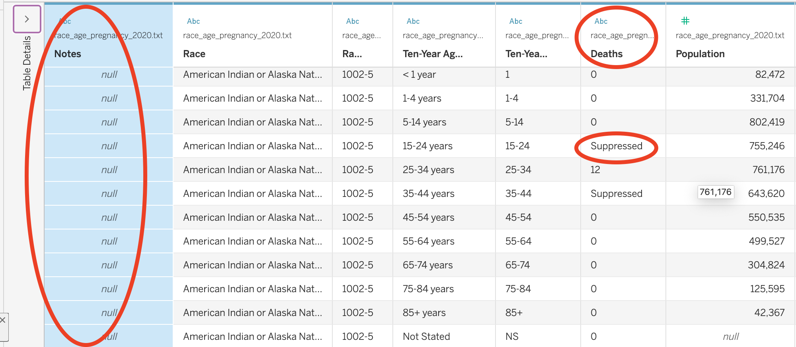
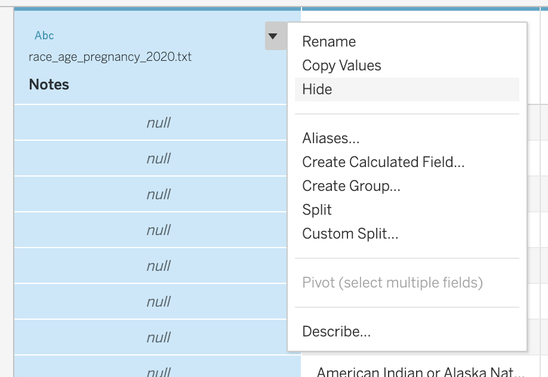
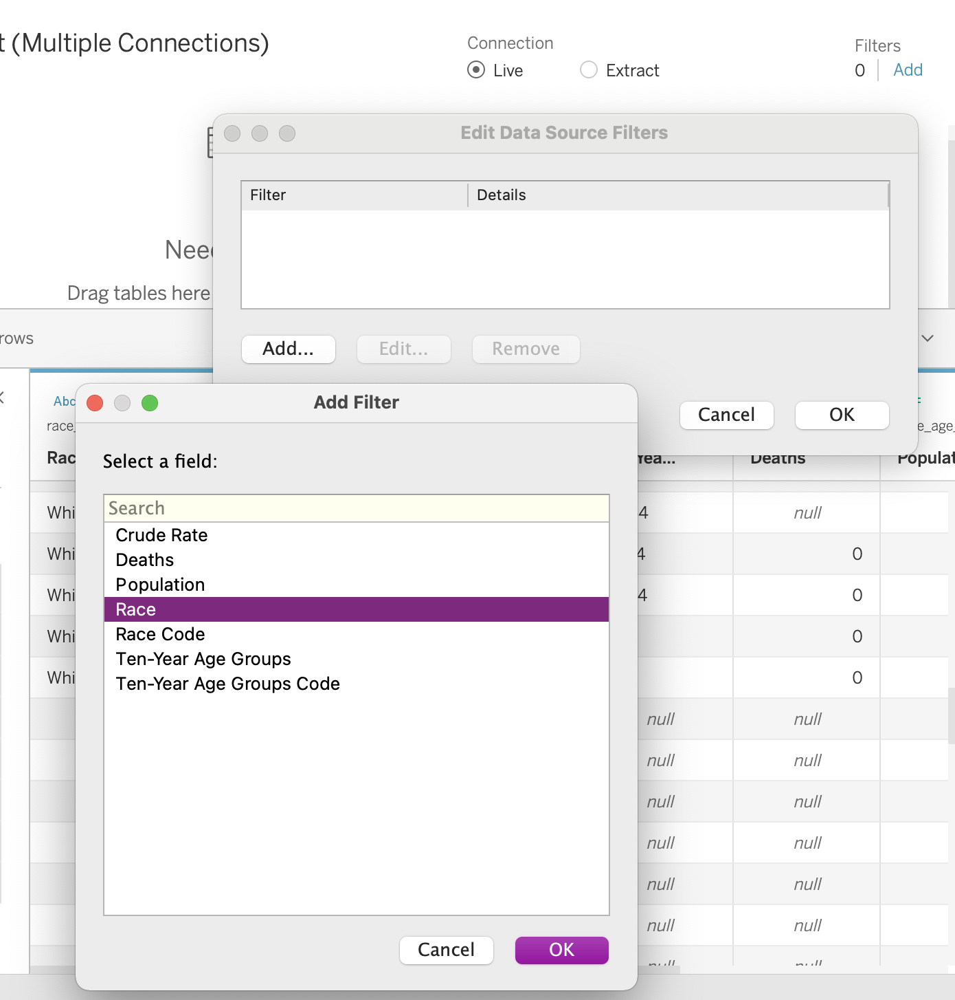
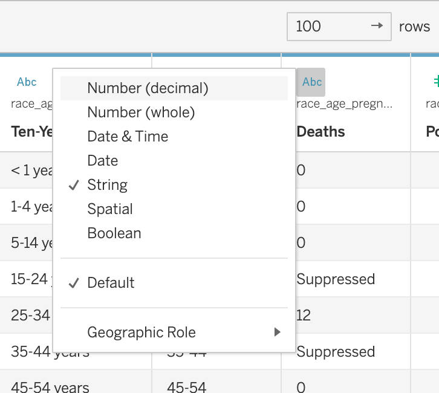
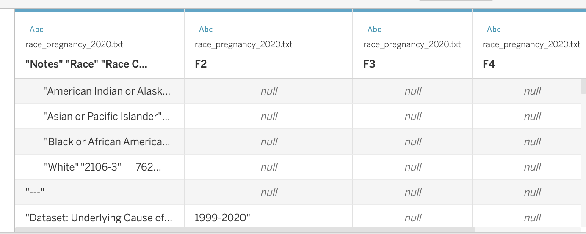
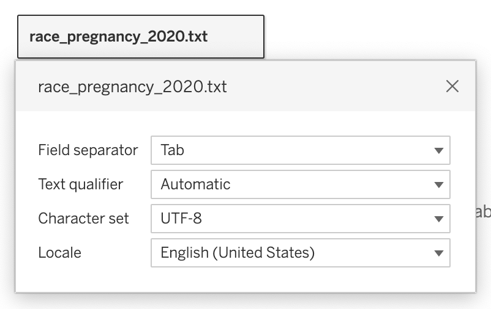

Lab 3: Health Equity
Overview
In this lab, you will work through a series of exercises to visualize data regarding racial inequities in maternal mortality rates in the United States. Specifically, you will practice producing both uni-variate and multi-variate column plots and line plots from aggregate data in Tableau.
The Dataset
Through the National Vital Statistics System, the US National Center for Health Statistics aggregates data about population health (including births, deaths, and pregnancies) from states in order to guide public health policy and decision-making. The Center for Disease Control makes this data available to the public through a series of public use files, along with an online data query interface called WONDER (Wide-ranging OnLine Data for Epidemiologic Research). Navigating to the WONDER interface, an analyst can access and download US mortality and population data, spanning the years from 1999 to 2019, aggregated at national, state, and county levels. With the data gathered from US death certificates, which report an individuals’ underlying cause of death according to the Tenth Revision of the International Classification of Diseases, the death counts can be disaggregated into hundreds of different causes of death. The death counts can also be disaggregated by a series of demographic variables, including gender, age, race, and Hispanic ethnicity.
By adjusting the query parameters on the WONDER request form to indicate how the CDC’s data should be aggregated and filtered, data analysts can produce a series of different rectangular datasets. For example, an analyst can opt to group the results by Year and Race and filter the Cause of Death to ICD-10 codes O00-O99 (Pregnancy, childbirth and the puerperium) to produce a dataset that tracks the death counts and crude death rate due to pregnancy-related causes for different racial demographics in the US from 1999 to 2021. Alternatively, an analyst could opt to group the results by State and Cause of Death and filter the data to 2021 to determine the leading causes of death in each state in that year.
Instructions
Part 1: What counts in this dataset?
Navigate the data documentation here in order to determine when and how a “death” is counted in this dataset.
Part 2: Explore the WONDER Interface
For timing purposes, I’m going to link the datasets that you need for today’s Tableau exercises here. However, I will take some time during class to walk you through the different components of the interface.
Part 3: Cleaning Data Files
Download the following files to your computer:
Open Tableau, and create a new workbook called cdc_maternal_deaths. Click “Connect to Data” and the race_age_pregnancy_2020.txt file.
You’re going to notice when you import the file that the table needs some cleaning.

First, there is a column at the start of each table labeled “Notes.” If you scroll down, you will eventually see a series of notes that we need to consider when analyzing the data:
Dataset: Underlying Cause of Death, 1999-2020
Query Parameters:
Title: race_age_pregnancy_2020
ICD-10 Codes: O00-O99 (Pregnancy, childbirth and the puerperium)
Year/Month: 2020
Group By: Race; Ten-Year Age Groups
Show Totals: Disabled
Show Zero Values: True
Show Suppressed: True
Calculate Rates Per: 100,000
Rate Options: Default intercensal populations for years 2001-2009 (except Infant Age Groups)
Help: See http://wonder.cdc.gov/wonder/help/ucd.html for more information.
Query Date: Sep 1, 2023 5:41:50 PM
Suggested Citation: Centers for Disease Control and Prevention, National Center for Health Statistics. National Vital Statistics System, Mortality 1999-2020 on CDC WONDER Online Database, released in 2021. Data are from the Multiple Cause of Death Files, 1999-2020, as compiled from data provided by the 57 vital statistics jurisdictions through the Vital Statistics Cooperative Program. Accessed at http://wonder.cdc.gov/ucd-icd10.html on Sep 1, 2023 5:41:50 PM
Messages:
- Totals are not available for these results due to suppression constraints. More Information: http://wonder.cdc.gov/wonder/help/faq.html#Privacy.
Caveats:
- Data are Suppressed when the data meet the criteria for confidentiality constraints. More information: http://wonder.cdc.gov/wonder/help/ucd.html#Assurance of Confidentiality.
- Death rates are flagged as Unreliable when the rate is calculated with a numerator of 20 or less. More information: http://wonder.cdc.gov/wonder/help/ucd.html#Unreliable.
- Deaths of persons with Age Not Stated are included in All counts and rates, but are not distributed among age groups, so are not included in age-specific counts, age-specific rates or in any age-adjusted rates. More information: http://wonder.cdc.gov/wonder/help/ucd.html#Not Stated.
- Information included on the death certificate about the race and Hispanic ethnicity of the decedent is reported by the funeral director as provided by an informant, often the surviving next of kin, or, in the absence of an informant, on the basis of observation. Race and ethnicity information from the census is by self-report. To the extent that race and Hispanic origin are inconsistent between these two data sources, death rates will be biased. More information: http://wonder.cdc.gov/wonder/help/ucd.html#Racial Differences.
- The population figures for year 2020 are bridged-race estimates of the July 1 resident population, from the Vintage 2020 postcensal series released by NCHS on September 22, 2021. The population figures for year 2019 are bridged-race estimates of the July 1 resident population, from the Vintage 2019 postcensal series released by NCHS on July 9, 2020. The population figures for year 2018 are bridged-race estimates of the July 1 resident population, from the Vintage 2018 postcensal series released by NCHS on June 25, 2019. The population figures for year 2017 are bridged-race estimates of the July 1 resident population, from the Vintage 2017 postcensal series released by NCHS on June 27, 2018. The population figures for year 2016 are bridged-race estimates of the July 1 resident population, from the Vintage 2016 postcensal series released by NCHS on June 26, 2017. The population figures for year 2015 are bridged-race estimates of the July 1 resident population, from the Vintage 2015 postcensal series released by NCHS on June 28, 2016. The population figures for year 2014 are bridged-race estimates of the July 1 resident population, from the Vintage 2014 postcensal series released by NCHS on June 30, 2015. The population figures for year 2013 are bridged-race estimates of the July 1 resident population, from the Vintage 2013 postcensal series released by NCHS on June 26, 2014. The population figures for year 2012 are bridged-race estimates of the July 1 resident population, from the Vintage 2012 postcensal series released by NCHS on June 13, 2013. The population figures for year 2011 are bridged-race estimates of the July 1 resident population, from the Vintage 2011 postcensal series released by NCHS on July 18, 2012. Population figures for 2010 are April 1 Census counts. The population figures for years 2001 - 2009 are bridged-race estimates of the July 1 resident population, from the revised intercensal county-level 2000 - 2009 series released by NCHS on October 26, 2012. Population figures for 2000 are April 1 Census counts. Population figures for 1999 are from the 1990-1999 intercensal series of July 1 estimates. Population figures for the infant age groups are the number of live births. Note: Rates and population figures for years 2001 - 2009 differ slightly from previously published reports, due to use of the population estimates which were available at the time of release.
- The population figures used in the calculation of death rates for the age group ‘under 1 year’ are the estimates of the resident population that is under one year of age. More information: http://wonder.cdc.gov/wonder/help/ucd.html#Age Group.
- Beginning with the 2018 data, changes have been implemented that affect the counts for ICD-10 cause of death codes O00-O99 compared to previous practice. In addition, data for the cause of death codes O00-O99 for 2003 through 2017 reflect differences in information available to individual states and probable errors. Caution should be used in interpreting these data. More information can be found at: https://www.cdc.gov/nchs/maternal-mortality/.
This is all important information and we should keep it in mind as we go about our analysis. …but this is metadata, not data for analysis. or the purposes of our data analysis, we are going to Hide that column.
Question
Click on the downward triangle on the Notes column and select Hide.

Now that we have hidden that column, there are a series of empty rows at the bottom of our dataset. We are going to filter those out.
Question
Click on the “Add” link next to Filters in the top right corner of Tableau. Click Add, and select Race - a variable that shouldn’t have any missing values in this dataset. Click OK, and then check all boxes, except for “Null” to filter out the null values.

You will also notice that both the Deaths column and the Crude Rate column were assumed to contain text data, even though those columns are supposed to report numeric quantities. This is because, in certain subsets, the CDC “Suppressed” the data or determined it to be “Unreliable”. Any time fewer than 10 deaths would be reported in a subset of data, the CDC suppressed the death count to protect the privacy of the individuals in that subset. This means that the more specific you make your data request, the more likely it will be that data gets suppressed (because fewer people will be represented in each subset). Any time fewer than 20 deaths are reported, the crude rate is considered to be “Unreliable.” While this is helpful information for us, in order to plot the data, we need those columns to both be numeric.
Question
Click on the number ‘Abc’ symbol in both the Deaths column and the Crude Rate column and convert the columns to numeric. Make sure you select the Crude Rate column is displayed in decimals.

We need to repeat this for the remainder of files we will use in the lab. However one of the files has some special formatting issues.
Question
In the top menu, click Data > New Data Source. Add either year_pregnancy.txt or race_year_pregnancy.txt.
Repeat the formatting steps for the file you choose, and then repeat this process for the two other text files.
When you get to race_pregnancy_2020.txt, we need to take one additional step. Tableau does not recognize the delimiters in this file. Add the file to see what I mean. See how the table looks quite off?
 To fix this, click on the downward arrow next to the file name in your data view, and then select “Text File Properties”. Set the Field Separator to “Tab”.
 After that you should be able to edit the file the same way you did the rest of them.
Finally, we are ready to do some analysis!
Part 4: Data Analysis
Column Plots
Column plots are particularly useful for comparing the numeric values associated with different categories. They typically involve a categorical variable on the x-axis and a numeric variable on the y-axis. We can make sense of how categories differ by comparing the heights of each bar. In column plots, height serves as a visual aesthetic - some feature of a plot that communicates something about the values in our data.
Question
Create a new worksheet in Tableau called “U.S. Maternal Mortality, 2020”. Name the tab “race_2020”. Click on race_pregnancy_2020 in the “Data” tab. Drag Race to the Rows field and Crude Rate to the Columns field. Sort the bars from longest to shortest.
- How can we summarize what we see in this plot quantitatively?
- How might we interpret what we see in this plot?
- What might it be evidence of?
Keep in mind that all of this data has already been aggregated. We do not need to sum, average, or perform any other operation on the reported values because both the Deaths value and the Crude Rate are calculated for a specific subset of people. They are Attributes not Measures. By default, Tableau will SUM the measure when you drag it onto your worksheet. You can keep it this way as long as you are sure that values represented on the plot are specific to one row of data (meaning there’s nothing being aggregated in the worksheet).
Question
Duplicate the last plot that you created, and rename the tab “race_2020_tree”. Click on the “Show Me” button and select the treemap. Adjust the title of the legend to “Crude Rate”.
Note how, in this new plot, we are no longer using height to visualize differences across categories. Instead, we are using both area and color to visualize the differences. Area and color are also visual aesthetics.
Notably, we are visualizing both area and color in a continuous way. Larger boxes are associated with larger values, and smaller boxes are associated with smaller values. Color is displayed on a gradient with darker colors associated with larger values and lighter colors associated with smaller values. The area size is specific to a numeric value, and the shade of color is specific to a numeric value. Indeed, it makes sense to use a color gradient when visualizing numeric data.
This differs from visualizing color in a discrete way.
Question
Duplicate the last plot that you created, and rename the tab “race_2020_tree_cat”. Drag Race to the Color field.
Note how in this plot, colors are not displayed on a gradient. Instead, there are discrete colors associated with each race. This is because we differentiating color along a categorical variable, where there are discrete divisions between categories. In general, we want to use discrete color palettes when associating color with a categorical variable and continuous color palettes when associated color with a numeric variable.
Which of the plots that we just created do you find the most compelling and why?
Stacked Column Plots
In the last series of plots, we were only visualizing one categorical variable. …but sometimes, we want to compare numeric values across some intersection of categorical variables. In this case, we will create a stacked column plot, using both height and color as visual aesthetics.
Create a new worksheet in Tableau called “U.S. Maternal Mortality, 2020”. Name the tab “race_2020_age”. Click on race_age_pregnancy_2020 in the “Data” tab. Drag Ten-Year Age Groups to the Columns field and Crude Rate to the Rows field. Drag Race to the Color field. Note how a discrete color palette is created.
Click on the “Show Me” button, and select the side-by-side bars. I personally prefer this type of plot over a stacked bar plot because I find it easier to compare across categories when the bars are side-by-side. Move around the order of the variables to make the most compelling plot. Add a Filter to only show the relevant age groups.
- How can we summarize what we see in this plot quantitatively?
- How might we interpret what we see in this plot?
- What might it be evidence of?
Line Plots
Line plots are particularly useful for showing change over time. They typically involve a date on the x-axis and a numeric variable on the y-axis. The height of each point tells us something about the time period represented.
Question
Create a new worksheet in Tableau called “U.S. Maternal Mortality - 1999-2020”. Name the tab “by_year”. Click on year_pregnancy in the “Data” tab. Drag Year to the Columns field and Crude Rate to the Rows field.
- How can we summarize what we see in this plot quantitatively?
- How might we interpret what we see in this plot?
- What might it be evidence of?
Sometimes we want to compare the changes across different groups over time. To do so, we can use color to differentiate lines across different groups.
Question
Create a new worksheet in Tableau called “U.S. Maternal Mortality - 1999-2020”. Name the tab “by_year_race”. Click on year_race_pregnancy in the “Data” tab. Drag Year to the Columns field and Crude Rate to the Rows field. Convert Crude Rate to an attribute. Drag Race to the Color field.
- What kind of color palette was created here?
- How can we summarize what we see in this plot quantitatively?
- How might we interpret what we see in this plot?
- What might it be evidence of?
Part 5: Reflection
How might we summarize what we just learned into a factual claim?
Note that this data is often cited as evidence of racial disparities in healthcare. The CDC website includes a webpage titled “Working Together to Reduce Black Maternal Mortality,” and cites this data as evidence of racial disparities. Here are just a few examples of other articles that also do so:
- Racial Disparities in Maternal and Infant Health: Current Status and Efforts to Address Them
- American Black women face disproportionately high rates of maternal mortality
- Racial Disparities in Maternal Health
- Why Racial Gaps In Maternal Mortality Persist
- Visualizing the stark maternal health inequities in the United States
In my research, I came across one article that countered these claims in spite of the data evidence. “A Woke Panic on Maternal Mortality” argues that activists and academics have exploited the data to push a narrative of systemic racism in healthcare. In small groups, read through this article and try to identify the arguments that the authors use to counter the claims often made from the data. How would you respond to their counter-arguments? What evidence could you provide in your response?